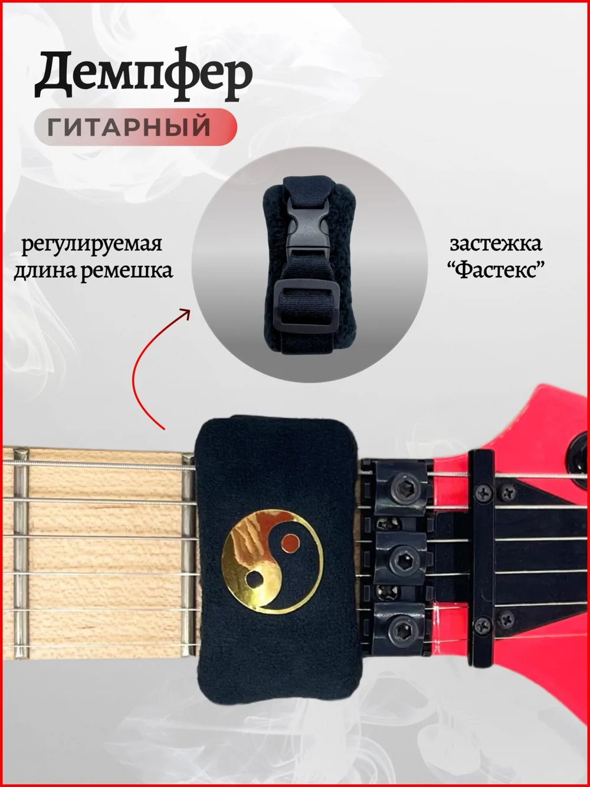
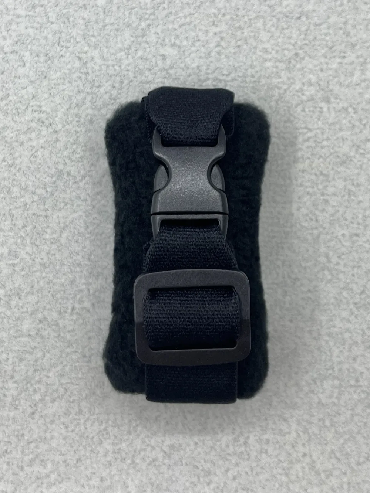
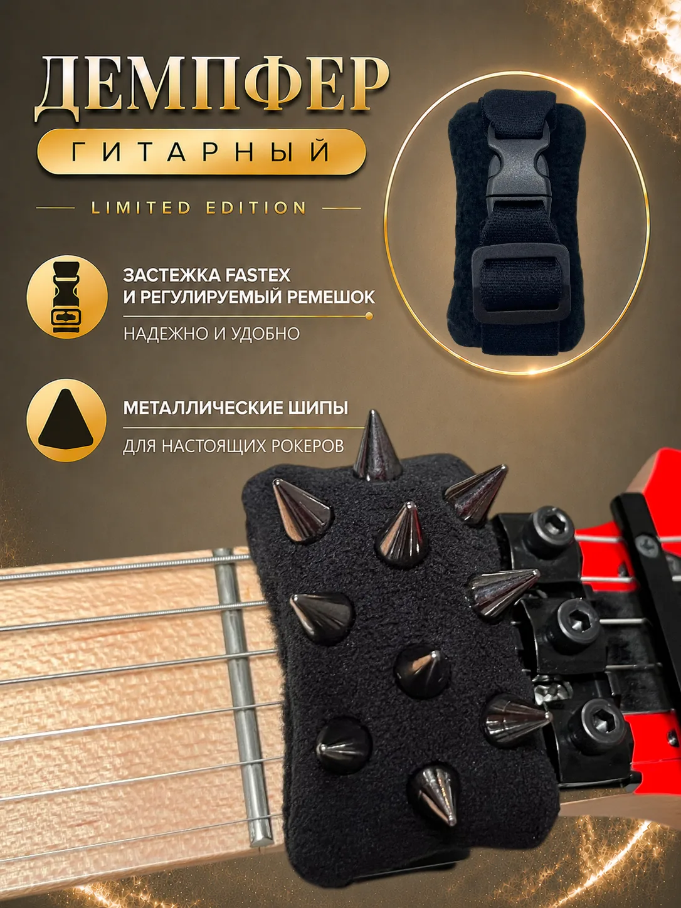

BIGNEST / СОБСТВЕННАЯ МАСТЕРСКАЯ
ДЕМПФЕРЫ
С ХАРАКТЕРОМ.
Четыре серии демпферов BigNest: металлизированные рисунки, светящиеся рисунки, классический чёрный и модель с шипами. Выбирай исполнение и изучай фотографии, конструкцию и применение.

01 / BIGNEST
МЕТАЛЛИЗИРОВАННЫЕ
Рисунки золотистого и серебристого цвета; выбор оформления.
СМОТРЕТЬ СЕРИЮ ↗
02 / BIGNEST
СВЕТЯЩИЕСЯ
Рисунки, которые светятся после зарядки ярким светом.
СМОТРЕТЬ СЕРИЮ ↗
03 / BIGNEST
КЛАССИЧЕСКИЙ ЧЁРНЫЙ
Сдержанный чёрный демпфер без рисунка.
СМОТРЕТЬ СЕРИЮ ↗
04 / BIGNEST
С МЕТАЛЛИЧЕСКИМИ ШИПАМИ
Мягкий демпфер с металлическими декоративными шипами.
СМОТРЕТЬ СЕРИЮ ↗Хочешь узнать о доступных вариантах?
Информация и фотографии представлены для знакомства с изделиями. Актуальные предложения — в магазине BigNest на Ozon; вопросы об аксессуарах можно задать в VK.